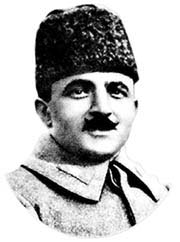

Enver Paþa (1881-1922)

Osmanlý Devleti'nin mukadderatýnda söz sahibi olan Ýttihad ve Terakki'nin en aktif üç paþasýndan biri olan Enver Paþa, 1881'de Ýstanbul'da doðdu. Asýl adý Ýsmail Enver olan Enver Paþa üç yaþýnda iken aþýrý isteði üzerine ibtida i mektebine yazýldý. Babasýnýn Manastýr'a tayininin çýkmasý üzerine burada okumaya devam edip askeri rüþdiye ve askeri idadiyi bitirerek Harp okuluna girdi. Bundan sonra Erkan-ý Harb okuluna girdi. Bu okuldan yüzbaþý rütbesiyle mezun oldu ve Manastýr'daki 13. Seyyar Topçu Alayý'na tayin edildi (1903). 7 Mart 1905'te kolaðasý (üsteðmen) oldu. Bu görevi sýrasýnda Rum ve Arnavut çetelerine karþý giriþilen harekatta gösterdiði baþarýdan dolayý altýn liyakat madalyasý ile ödüllendirildi.13 Eylül 1906'da binbaþýlýða yükseltildi.Ýttihat ve Terakki Cemiyetinin en aktif üyelerinden biri olan Enver, II. Meþrutiyetin ilaný ve meclisin yeniden açýlmasýný saðlamak maksadýyla Kolaðasý Niyazi Bey ile birlikte daða çýktý. Bu hareketi sonrasýnda Meþrutiyetin ilan edilmesi üzerine, hem "hürriyet kahramaný" olarak ün yaptý, hem de Ýttihat ve Terakki Cemiyeti'nin önde gelenleri arasýna girdi. 5 Mart 1909 tarihinde Berlin askeri ataþeliðine atandý. Yaklaþýk iki yýl bu görevi sürdürdü.
Ýtalya'nýn Trablusgarb'a saldýrmasý ve savaþýn baþlamasýndan sonra, Ýtalyanlara karþý gerilla savaþ taktiðini uygulamak üzere 22 Ekim 1911'de Bingazi'ye hareket etti. 24 Ocak 1912'de Bingazi Mýntýkasý kumandanlýðýna atandý. Buna ek olarak buranýn mutasarrýflýðýna da getirildi. Ýtalyanlara karþý baþarýlý mücadeleler verdiyse de Balkan Harbinin çýkmasý üzerine Ýstanbul'a geri döndü ve akabinde, Onuncu Erkan-ý Harbiye reisliðine atandý (1 Ocak 1913).
Meþhur Babýali Baskýnýna katýlarak hükümet darbesinde aktif rol oynadý. Bu baskýn sonrasýnda Kamil Paþa zorla istifa ettirilerek Mahmut Þevket Paþa'nýn sadarete getirilmesi saðlandý. Balkan Savaþý sýrasýnda Edirne'nin Bulgarlarýn eline geçmesi Ýttihat ve Terakki'yi zor durumdu býraktý. Savaþýn akabinde Balkan devletlerinin birbirine düþmesinden istifade edilerek Edirne'nin geri alýnýþý, hem Cemiyetin durumunu düzeltmesine yaradý hem de Enver Paþa'nýn þöhreti arttýðý gibi konumunun daha da güçlenmesine imkan saðladý. Önce miralay (albay) (15 Aralýk 1913) sonra mirliva (tuðgeneral) oldu (3 Ocak 1914) daha sonra da Harbiye Nazýrý oldu.
Birinci Dünya Savaþý'nýn baþlamasýyla beraber, askeri harekatýn yönetimini de üstlendi. Ordunun baþýnda Ruslara karþý giriþtiði Sarýkamýþ harekatýyla 90.000 mevcutlu ordunun büyük bir bölümünün, aðýr kýþ þartlarýnda Allahüekber daðlarýnda donarak ölmesi üzerine Enver Paþa da Ýstanbul'a döndü. Savaþýn kaybedilmesi ve Talat Paþa kabinesinin istifasý ile Enver Paþa'nýn da bakanlýðý sona erdi (14 Ekim !918). Kýsa bir süre sonra Ýttihad ve Terakki'nin ileri gelenleriyle beraber Almanya'ya gitti. 1 Ocak 1919 tarihli irade ile de ordudan atýldý.
Enver Bey Anavatanýndan ayrýlmak zorunda kaldýktan sonra boþ durmamýþ ve mücadelesine dýþarýda devam etmiþtir. Almanya'ya geçmesinden sonraki faaliyetlerinin baþýnda, özellikle Müslümanlarýn Ruslara karþý mücadelesine katkýda bulunmak ve onlarý teþkilatlandýrmak gelmektedir. Ýlk baþlarda kullanmak amacýyla Ruslar O'nunla anlaþmak istemiþler ama savaþmayý tercih etmiþtir.
Enver Bey Berlin'e vardýktan sonra, Ýttihat ve Terakki'nin yeniden toparlanma faaliyetlerinde rol aldý. Almanya'da bulunduðu sýralarda birkaç kez deðiþik isimlerle Rusya'ya gidip geldi. Bu yolculuklarýndan birinde Litvanya'da tutuklandý. Ýki ay hapis yattý (15 Ekim 1919). 1-8 Eylül 1920 tarihlerinde Bakü'de gerçekleþtirilen Doðu Halklarý Kongresi'ne Libya, Tunus, Cezayir, ve Fas'ý temsilen katýldý. Þubat 1922'deRuslara karþý savaþan Basmacýlar'ý teþkilatlandýrmak maksadýyla Duþanbe'ye gitti. Son olarak Belcuvan bölgesindeki Abýdarya köyünde karargah kurdu. 4 Aðustos 1922'de Kurban Bayramý'ný kutlarken Ruslarýn saldýrýsý sonucu çarpýþmada ön saflarda savaþýrken þehid düþtü. (M.Þükrü Hanioðlu; "Enver Paþa", TDV Ýslam Ansiklopedisi, XI. C. s. 261-264)
Çok deðiþik deðerlendirmelere muhatap olan Enver Paþa'nýn hayat seyri içinde geçirmiþ olduðu zamanlar baþarý ve hüsraný bir arada getirmiþtir. Dolayýsýyla Onun hakkýnda kesin deðerlendirmelerde bulunmak zorlaþmaktadýr. Her þeyden önce özellikle kabinede görev yaptýðý dönem; gerek dünya gerekse Osmanlýlar açýsýndan son derece önemlidir. Enver Paþa ile beraber Ýttihad ve Terakki; Trablusgarb, Balkan ve I. Dünya Savaþlarýnýn ardarda patlak vermesinden dolayý çok sýkýntý çekmiþlerdir.
Enver Paþa, Ýkinci Meþrutiyetin ilanýna öncülük yaptý. Balkanlardaki çete olaylarýný bastýrýlmasýnda baþarýlý oldu. Trablusgarb ve Ýkinci Balkan Savaþlarý sýrasýndaki faaliyetleri artýlarý arasýndadýr. Almanlarla yapýlan ittifaktan hemen sonra, Osmanlý Devleti'nin savaþa gireceði kaçýnýlmaz olmakla beraber aceleci davranmasý, Kafkaslarda Ruslara karþý giriþilen baþarýsýz herakattaki rolü eksileri arasýndadýr. Ancak giriþtiði bunca faaliyetlerde iyi niyetli olduðu, vataný için çýrpýndýðý söylenebilir.
Enver Paþa ve Bediüzzaman Said Nursi
Bediüzzaman Hazretleri, Ýkinci Meþrutiyetin ilan edilmesinden kýsa bir süre önce Ýstanbul'a gelmiþ, meþrutiyetin ilanýný "hürriyetin ilaný" olarak deðerlendirip Ýslam adýna sahip çýkarak övgüyle karþýlamýþtýr. Enver Paþa ile tanýþmalarý büyük ihtimalle bu sýralarda olup ilk günden itibaren müsbet baþlamýþ ve bu istikamette sürmüþtür. Bediüzzaman'ýn, din adýna meþrutiyete sahip çýkmasý, Enver Paþa'nýn da hürriyetin ilanýnda büyük pay sahibi olmasý bunda etkili olduðu söylenebilir.
Birinci Dünya Savaþý'nda Enver Paþa'nýn Harbiye Nazýrý ve baþkumandan olmasýnýn yanýnda Kafkas bölgesinde Ruslarla savaþýrken, Bediüzzaman Hazretlerinin gönüllü alay komutaný olarak talebeleriyle birlikte gösterdikleri kahramanlýklarý yakýndan müþahade etmiþ, bu esnada yazýlan Ýþaratü'l- Ý'caz adlý eserinin basýmý için gerekli olan kaðýdýn parasýný þahsi gelirinden ödemek gayretinde bulunmuþtur. (Emirdað Lahikasý s. 242 / Maktubat, s.75 / Mufassal Tarihçe-i Hayat s.443 ).
Bediüzzaman Hazretlerinin, Rusya esareti dönüþünde Enver Paþa, çok yakýndan ilgi gösterdiði gibi gereken hürmeti de göstermiþtir. Bir taraftan Bediüzzaman'ý yakýn çevresiyle tanýþtýrýp övgüyle söz ederken diðer taraftan, bol maaþlý görevler teklif etmiþtir. Tüm bunlara teþekkür edip reddetmesine raðmen, yine Enver Paþa'nýn giriþimleriyle, hükümetin ortak oyu ve þeyhülislamýn teklifiyle padiþahýn onayýna sunularak, Darü'l-Hikmeti'l-Ýslamiye azalýðýna seçilmesi saðlanmýþtýr. Enver Paþa, Bediüzzaman hazretlerine Harbiye Nezareti adýna ordunun iftihar madalyasýný takdim ettiði gibi, ilmiye sýnýfýnýn en yüksek ikinci rütbesi olan "mahreç mevleviyeti" payesinin verilmesine de önayak olmuþtur. Diðer yandan Bediüzzamanýn esaretten sonra Ýstanbul'a dönmesiyle kalacaðý yerin temini konusunda da yardýmcý olmuþ ve gerekeni yapmýþtýr. (Mufassal Tarihçe-i Hayat s. 443-445)
Mondros Mütarekesi'nin imzalanmasýyla yurt dýþýna çýkmalarýndan sonra; maðlubiyetin baþ sorumlusu olarak kabul edilen Ýttihatçýlarýn aleyhindeki faaliyetler hýz kazanmýþ ve hak etmedikleri ithamlara maruz kalmýþlardýr. Bu hengamda, Bediüzzaman Hazretleri, iktidarda bulunduklarý sýrada eleþtirmiþ bulunmasýna raðmen onlarýn hakkýnda hüsn-ü zanda bulunmuþ, sebebi sorulduðunda; "Mümkün olduðu derecede sû-i zan ettiðiniz için, ben hüsn-ü zan ederim. Eðer öyle ise, zaten iyi. Yoksa, ta öyle olsunlar; yol gösteriyorum" þeklinde karþýlýk vermiþtir.(Sünuhat s 67-68) demiþtir.
Bediüzzaman Hazretleri, Ýttihatçýlarýn büyük ekseriyeti, özellikle Enver ve Niyazi Beyler hakkýnda, hüsn-ü zanda bulunmakla beraber iktidarlarý boyunca onlara yol gösterici olurken, gereken yerde eleþtirisini yapmýþtýr. Bir taraftar veya muhaliften ziyade; din, millet ve devlet için yapýlmasý elzem olan konularda fikirlerini açýk bir þekilde beyan etmiþtir. "Sen Selanik'te Ýttihat ve Terakkî ile ittifak etmiþtin, neden ayrýldýn" þeklinde kendisine yöneltilen bir soruya verdiði þu cevap, bunun en güzel ifadesidir:
"Ben ayrýlmadým, onlarýn bazýlarý ayrýldýlar. Niyazi Bey, Enver Bey gibi adamlarla þimdi de müttefikim; lakin bazýlarý bizden ayrýldýlar, bataklýk yoluna saptýlar. Hamiyetlerinde þüphem yoktur, fakat mukabillerinde garaz hissettiler; onlar da, tabiî, garaza ittiba ettiler." (Ýçtimaî Reçeteler II, s. 289.)